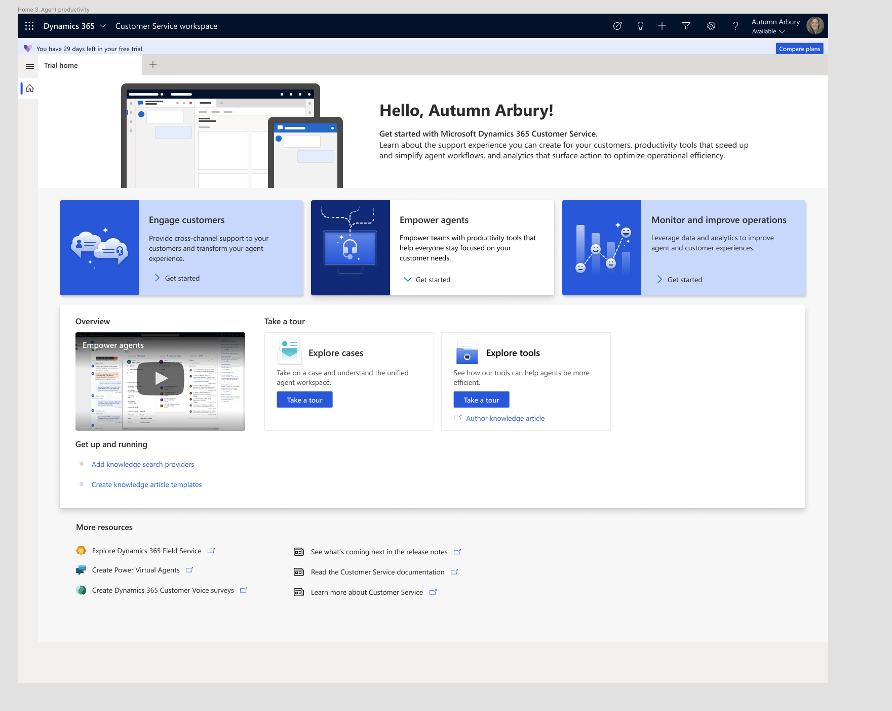
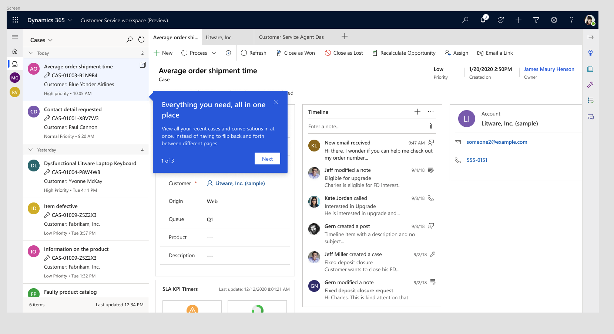
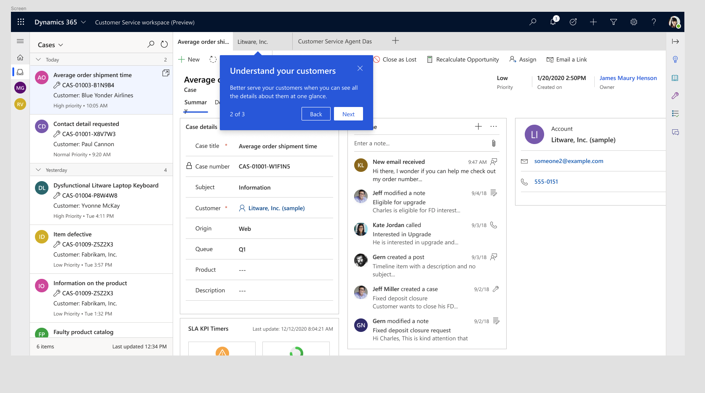
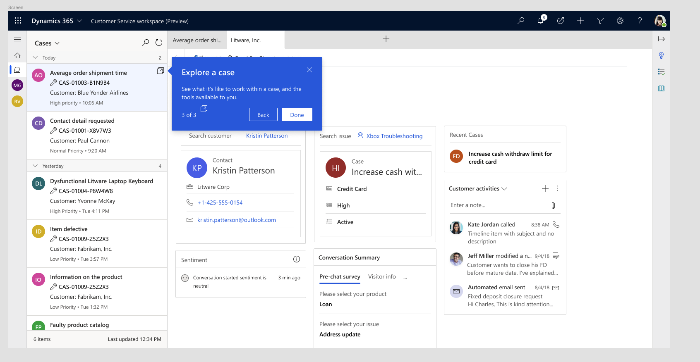

Challenge
Dynamics 365's Customer Service workspace had recently been redesigned to bring customer information into a single unified view, eliminating the need for service agents to toggle between multiple screens to get context on a case. The Sales team needed a way to demonstrate this improvement to prospective clients without relying on a live demo every time — something reps could point to consistently, at any point in a pitch, that would make the value of the redesign immediately clear to someone seeing the product for the first time. The ask: build a short, guided in-product tour that highlights the update and sells its benefit in just a few sentences per step.

The redesigned Customer Service workspace home screen. The guided tour is surfaced here under "Take a tour" → "Explore cases," so reps can launch it directly from a trial or demo environment.
My Role
Small, focused team: a product owner, a developer, and me as UX writer. The PO and developer owned the tour's technical build and where it would surface in the product; I owned all of the writing — the three sequential callout messages that walk a first-time viewer through the unified workspace, one UI area at a time.
Process & Approach
Each callout needed to do three things in very little space:
- Lead with a clear customer benefit, not a feature label
- Speak to a familiar pain point before delivering the payoff
- Stay consistent with the voice already established elsewhere in the product
That last point mattered more than it might seem. Dynamics 365's own workspace already used a consistent verb-plus-benefit pattern in its category tiles — "Engage customers," "Empower agents," "Monitor and improve operations." Rather than treating the tour copy as a standalone task, I wrote each callout headline to match that existing pattern, so the tour would feel like a natural extension of the product's voice rather than a bolted-on feature explainer.
I don't have the original draft copy preserved for all three callouts, but I recall early language for the second callout reading something close to "Know better the customer" — a literal, translated-sounding phrase that didn't match the confident tone used elsewhere in the product. I rewrote it as "Understand your customers," both fixing the awkward construction and aligning it with the "verb + customers/agents/operations" pattern already in place.
I also suggested the "1 of 3," "2 of 3," "3 of 3" step-counter language that appears in each callout. It's a small detail, but it does real work: it tells the viewer up front exactly how much is left, which matters in a sales pitch context where reps need to be able to move through the tour confidently and the prospect shouldn't feel like they're stuck in an open-ended walkthrough.
Selected Work
Callout 1 — Introducing the unified view

Leads with the specific pain point (flipping between pages) the redesign solves, then states the benefit plainly. This callout appears first because it explains why the redesign matters before showing any of its specific parts.
Callout 2 — Case details view

Reframes a feature (seeing case/customer details in one panel) as a customer-outcome statement, matching the "Understand your customers" phrasing to the product's existing "Engage customers / Empower agents" tile language for a consistent voice across the experience.
Callout 3 — Exploring a case

Functions more as an orientation step than a benefit statement — intentionally, since this step introduces a multi-tool area (search, sentiment, conversation summary) rather than a single feature, and needed to set expectations for what the viewer was about to click into next.
Results
Reusable across pitches. Shipped a three-step guided tour that Sales could use consistently across pitches, without needing a live demo of the redesigned workspace every time.
Consistent product voice. Callout copy was structured to match Dynamics 365's existing voice patterns, keeping the tour from feeling like a separate, disconnected explainer bolted onto the product.
Positive reception. The team called out the rewritten copy as noticeably clearer than the original drafts, and Sales was happy with the final tour — a small but concrete signal that tightening the language and aligning it to the product's existing voice made the tour more effective for its intended use.
Reflection
This project was a good reminder that content design contributions aren't limited to the words inside a single text box — the "1 of 3," "2 of 3," "3 of 3" step counter I suggested wasn't part of the original ask, but it solved a real usability concern for a sales context: reps needed to move through the tour with confidence, and prospects needed to know at a glance how much was left. It's a small detail, but it's the kind of thing content design is well-positioned to catch, since it sits right at the intersection of clarity and user confidence.
If I were revisiting this project, I'd want to go back and preserve early drafts more consistently — I only have a fragment of the original copy remembered rather than documented, which made it harder to show the full scope of the revision work here. It's a good process lesson: save the "before" version of everything, even internal drafts, since you don't know yet which pieces will end up being useful evidence of your thinking later.